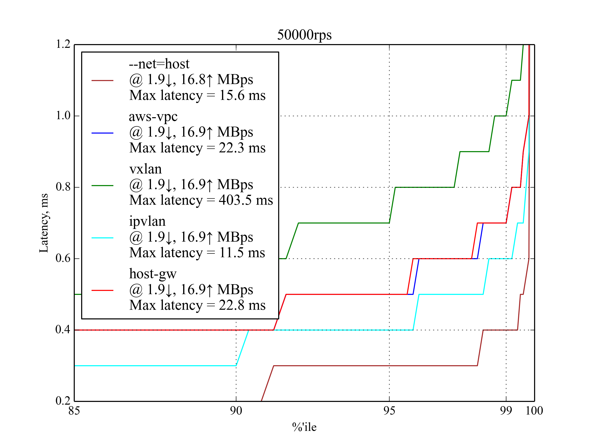
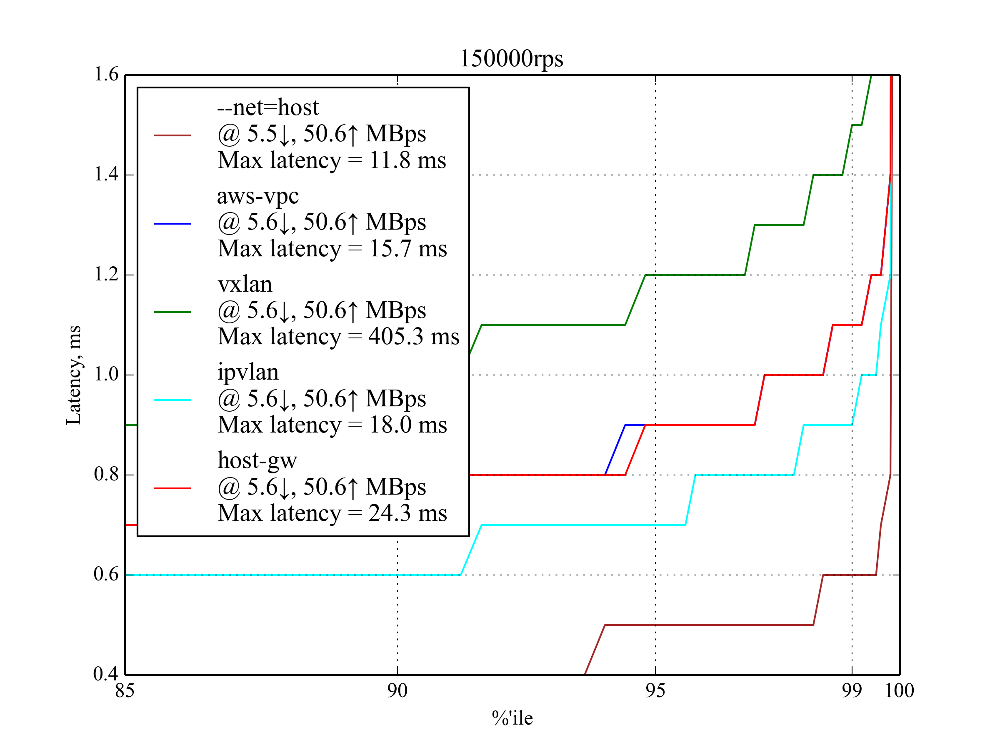
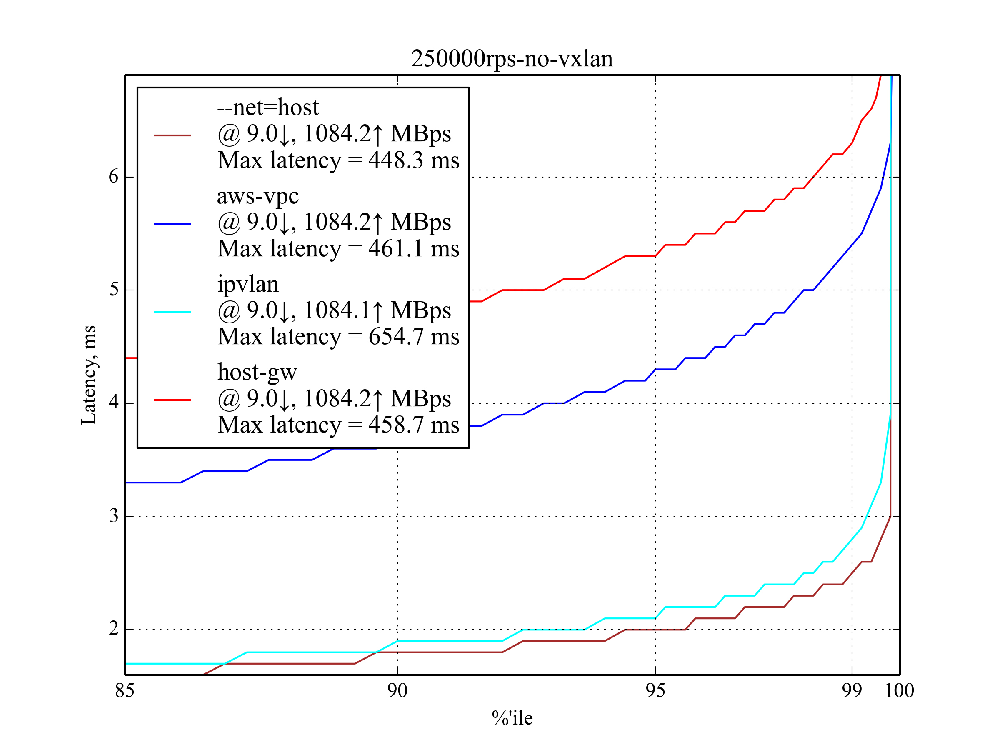

Comparison of Networking Solutions for Kubernetes¶
Kubernetes requires that each container in a cluster has a unique, routable IP. Kubernetes doesn’t assign IPs itself, leaving the task to third-party solutions.
In this study, our goal was to find the solution with the lowest latency, highest throughput, and the lowest setup cost. Since our load is latency-sensitive, our intent is to measure high percentile latencies at relatively high network utilization. We particularly focused on the performance under 30–50% of the maximum load, because we think this best represents the most common use cases of a non-overloaded system.
Competitors¶
Docker with --net=host¶
This was our reference setup. All other competitors are compared against this setup.
The –net=host option means that containers inherit the IPs of their host machines, i.e. no network containerization is involved.
A priori, no network containerization performs better than any network containerization; this is why we used this setup as a reference.
Flannel¶
Flannel is a virtual network solution maintained by the CoreOS project. It’s a well-tested, production ready solution, so it has the lowest setup cost.
When you add a machine with flannel to the cluster, flannel does three things:
Allocates a subnet for the new machine using etcd
Creates a virtual bridge interface on the machine (called docker0 bridge)
Sets up a packet forwarding backend:
aws-vpcRegister the machine subnet in the Amazon AWS instance table. The number of records in this table is limited by 50, i.e. you can’t have more than 50 machines in a cluster if you use flannel with
aws-vpc. Also, this backend works only with Amazon’s AWS.host-gwFoo bar baz.
vxlanCreate a virtual VXLAN interface.
Because flannel uses a bridge interface to forward packets, each packet goes through two network stacks when travelling from one container to another.
IPvlan¶
IPvlan is driver in the Linux kernel that lets you create virtual interfaces with unique IPs without having to use a bridge interface.
To assign an IP to a container with IPvlan you have to:
- Create a container without a network interface at all
- Create an ipvlan interface in the default network namespace
- Move the interface to the container’s network namespace
IPvlan is a relatively new solution, so there are no ready-to-use tools to automate this process. This makes it difficult to deploy IPvlan with many machines and containers, i.e. the setup cost is high.
However, IPvlan doesn’t require a bridge interface and forwards packets directly from the NIC to the virtual interface, so we expected it to perform better than flannel.
Load Testing Scenario¶
For each competitor we run these steps:
- Set up networking on two physical machines
- Run tcpkali in a container on one machine, let is send requests at a constant rate
- Run Nginx in a container on the other machine, let it respond with a fixed-size file
- Capture system metrics and tcpkali results
We ran the benchmark with the request rate varying from 50,000 to 450,000 requests per second (RPS).
On each request, Nginx responded with a static file of a fixed size: 350 B (100 B content, 250 B headers) or 4 KB.
Results¶
- IPvlan shows the lowest latency and the highest maximum throughput. Flannel with
host-gwandaws-vpcfollows closely behind, howeverhost-gwshows better results under maximum load. - Flannel with
vxlanshows the worst results in all tests. However, we suspect that its exceptionally poor 99.999 percentile is due to a bug. - The results for a 4 KB response are similar to those for 350 B response, with two noticeable differences:
- the maximum RPS point is much lower, because with 4 KB responses it takes only ≈270k RPS to fully load a 10 Gbps NIC
- IPvlan is much closer to
--net=hostnear the throughput limit
Our current choice is flannel with host-gw. It doesn’t have many dependencies (e.g. no AWS or new Linux version required), it’s easy to set up compared to IPvlan, and it has sufficient performance characteristics. IPvlan is our backup solution. If at some point flannel adds IPvlan support, we’ll switch to it.
Even though aws-vpc performed slightly better than host-gw, it’s 50 machine limitation and the fact that it’s hardwired to Amazon’s AWS are a dealbreaker for us.
50,000 RPS, 350 B¶
{kind=link}
At 50,000 requests per second, all candidates show acceptable performance. You can already see the main trend: IPVlan performs the best, host-gw and aws-vpc follow closely behind, vxlan is the worst.
150,000 RPS, 350 B¶
{kind=link}
| Setup | 95 %ile | 99 %ile | 99.5 %ile | 99.99 %ile | 99.999 %ile | Max Latency |
|---|---|---|---|---|---|---|
| IPvlan | 0.7 | 0.9 | 1 | 6.7 | 9.9 | 18 |
aws-vpc |
0.9 | 1.1 | 1.2 | 6.5 | 9.8 | 15.7 |
host-gw |
0.9 | 1.1 | 1.2 | 5.9 | 9.6 | 24.3 |
vxlan |
1.2 | 1.5 | 1.6 | 6.6 | 201.9 | 405.3 |
--net=host |
0.5 | 0.6 | 0.6 | 4.8 | 8.9 | 11.8 |
IPvlan is slightly better than host-gw and aws-vpc, but it has the worst 99.99 percentile. host-gw performs slightly better than aws-vpc.
250,000 RPS, 350 B¶

This load is also expected to be common on production, so these results are particularly important.
| Setup | 95 %ile | 99 %ile | 99.5 %ile | 99.99 %ile | 99.999 %ile | Max Latency |
|---|---|---|---|---|---|---|
| IPvlan | 1 | 1.2 | 1.4 | 6.3 | 10.1 | 24.3 |
aws-vpc |
1.2 | 1.5 | 1.6 | 5.6 | 9.4 | 27.3 |
host-gw |
1.1 | 1.4 | 1.6 | 8.6 | 11.2 | 40.1 |
vxlan |
1.5 | 1.9 | 2.1 | 16.6 | 202.4 | 245.5 |
--net=host |
0.7 | 0.8 | 0.9 | 3.7 | 7.7 | 16.8 |
IPvlan again shows the best performance, but aws-vpc has the best 99.99 and 99.999 percentiles. host-gw outperforms aws-vpc in 95 and 99 percentiles.
350,000 RPS, 350 B¶

In most cases, the latency is close to the 250,000 RPS, 350 B case, but it’s rapidly growing after 99.5 percentile, which means that we are getting close to the maximum RPS.
450,000 RPS, 350 B¶
This is the maximum RPS that produced sensible results.
IPvlan leads again with latency ≈30% worse than that of --net-host:
{kind=link}
{kind=link}
Interestingly, host-gw performs much better than aws-vpc:

500,000 RPS, 350 B¶
Under 500,000 RPS, only IPvlan still works and even outperforms --net=host, but the latency is so high that we think it would be of no use to latency-sensitive applications.

50k RPS, 4 KB¶

Bigger response results in higher network usage, but the leaderboard looks pretty much the same as with the smaller response:
| Setup | 95 %ile | 99 %ile | 99.5 %ile | 99.99 %ile | 99.999 %ile | Max Latency |
|---|---|---|---|---|---|---|
| IPvlan | 0.6 | 0.8 | 0.9 | 5.7 | 9.6 | 15.8 |
aws-vpc |
0.7 | 0.9 | 1 | 5.6 | 9.8 | 403.1 |
host-gw |
0.7 | 0.9 | 1 | 7.4 | 12 | 202.5 |
vxlan |
0.8 | 1.1 | 1.2 | 5.7 | 201.5 | 402.5 |
--net=host |
0.5 | 0.7 | 0.7 | 6.4 | 9.9 | 14.8 |
150k RPS, 4 KB¶

Host-gw has a surprisingly poor 99.999 percentile, but it still shows good results for lower percentiles.
| Setup | 95 %ile | 99 %ile | 99.5 %ile | 99.99 %ile | 99.999 %ile | Max Latency |
|---|---|---|---|---|---|---|
| IPvlan | 1 | 1.3 | 1.5 | 5.3 | 201.3 | 405.7 |
aws-vpc |
1.2 | 1.5 | 1.7 | 6 | 11.1 | 405.1 |
host-gw |
1.2 | 1.5 | 1.7 | 7 | 211 | 405.3 |
vxlan |
1.4 | 1.7 | 1.9 | 6 | 202.51 | 406 |
--net=host |
0.9 | 1.2 | 1.3 | 4.2 | 9.5 | 404.7 |
250k RPS, 4 KB¶
{kind=link}
This is the maximum RPS with big response. aws-vpc performs much better than host-gw, unlike the small response case.
Vxlan was excluded from the graph once again.
Test Environment¶
Background¶
To understand this article and reproduce our test environment, you should be familiar with the basics of high performance.
These articles provide useful insights on the topic:
- How to receive a million packets per second by CloudFlare
- How to achieve low latency with 10Gbps Ethernet by CloudFlare
- Scaling in the Linux Networking Stack from the Linux kernel documentation
Machines¶
- We use two c4.8xlarge instances by Amazon AWS EC2 with CentOS 7.
- Both machines have enhanced networking enabled.
- Each machine is NUMA with 2 processors; each processor has 9 cores, each core has 2 hyperthreads, which effectively allows to run 36 threads on each machine.
- Each machine has a 10Gbps network interface card (NIC) and 60 GB memory.
- To support enhanced networking and IPvlan, we’ve installed Linux kernel 4.3.0 with Intel’s ixgbevf driver.
Setup¶
Modern NICs offer Receive Side Scaling (RSS) via multiple interrupt request (IRQ) lines. EC2 provides only two interrupt lines in a virtualized environment, so we tested several RSS and Receive Packet Steering (RPS) Receive Packet Steering (RPS) configurations and ended up with following configuration, partly suggested by the Linux kernel documentation:
- IRQ
The first core on each of the two NUMA nodes is configured to receive interrupts from NIC.
To match a CPU to a NUMA node, use
lscpu:$ lscpu | grep NUMA NUMA node(s): 2 NUMA node0 CPU(s): 0-8,18-26 NUMA node1 CPU(s): 9-17,27-35
This is done by writing 0 and 9 to /proc/irq/<num>/smp_affinity_list, where IRQ numbers are obtained with
grep eth0 /proc/interrupts:$ echo 0 > /proc/irq/265/smp_affinity_list $ echo 9 > /proc/irq/266/smp_affinity_list
- RPS
Several combinations for RPS have been tested. To improve latency, we offloaded the IRQ handling processors by using only CPUs 1–8 and 10–17. Unlike IRQ’s smp_affinity, the rps_cpus sysfs file entry doesn’t have a _list counterpart, so we use bitmasks to list the CPUs to which RPS can forward traffic1:
$ echo "00000000,0003fdfe" > /sys/class/net/eth0/queues/rx-0/rps_cpus $ echo "00000000,0003fdfe" > /sys/class/net/eth0/queues/rx-1/rps_cpus
- Transmit Packet Steering (XPS)
All NUMA 0 processors (including HyperThreading, i.e. CPUs 0-8, 18-26) were set to tx-0 and NUMA 1 (CPUs 9-17, 27-37) to tx-12:
$ echo "00000000,07fc01ff" > /sys/class/net/eth0/queues/tx-0/xps_cpus $ echo "0000000f,f803fe00" > /sys/class/net/eth0/queues/tx-1/xps_cpus
- Receive Flow Steering (RFS)
We’re planning to use 60k permanent connections, official documentation suggests to round up it to the nearest power of two:
$ echo 65536 > /proc/sys/net/core/rps_sock_flow_entries $ echo 32768 > /sys/class/net/eth0/queues/rx-0/rps_flow_cnt $ echo 32768 > /sys/class/net/eth0/queues/rx-1/rps_flow_cnt
- Nginx
Nginx uses 18 workers, each worker has it’s own CPU (0-17). This is set by the worker_cpu_affinity option:
workers 18; worker_cpu_affinity 1 10 100 1000 10000 ...;
- Tcpkali
Tcpkali doesn’t have built-in CPU affinity support. In order to make use of RFS, we run tcpkali in a taskset and tune the scheduler to make thread migrations happen rarely:
$ echo 10000000 > /proc/sys/kernel/sched_migration_cost_ns $ taskset -ac 0-17 tcpkali --threads 18 ...
This setup allows us to spread interrupt load across the CPU cores more uniformly and achieve better throughput with the same latency compared to the other setups we have tried.
Cores 0 and 9 deal exclusively with NIC interrupts and don’t serve packets, but they still are the most busy ones:

RedHat’s tuned was also used with the network-latency profile on.
To minimize the influence of nf_conntrack, NOTRACK rules were added.
Sysctls was tuned to support large number of tcp connections:
fs.file-max = 1024000
net.ipv4.ip_local_port_range = "2000 65535"
net.ipv4.tcp_max_tw_buckets = 2000000
net.ipv4.tcp_tw_reuse = 1
net.ipv4.tcp_tw_recycle = 1
net.ipv4.tcp_fin_timeout = 10
net.ipv4.tcp_slow_start_after_idle = 0
net.ipv4.tcp_low_latency = 1
Footnotes
| [1] | Linux kernel documentation: RPS Configuration |
| [2] | Linux kernel documentation: XPS Configuration |